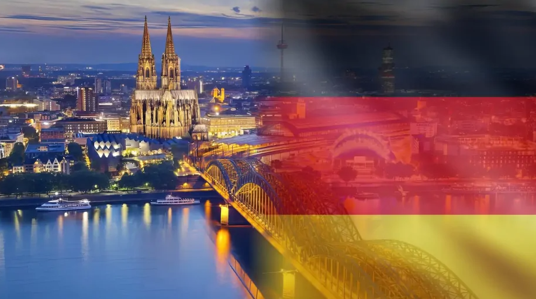

ЗАГАЛЬНА ІНФОРМАЦІЯ
Німеччина – центральноєвропейська країна,яка з 1949 по 1989 рік вона була розділена на Федеративну Республіку Німеччина та Німецьку Демократичну Республіку зі столицями в Бонні та Берліні.
У 1989 році сталася доленосна подія: впала Берлінська стіна. Це стало передвісником подальшого об'єднання німецьких територій і створення єдиної держави під назвою Федеративна Республіка Німеччина. Берлін став столицею у 1991 році за рішенням Бундестагу.
Сьогодні в Німеччині 16 федеральних земель, три з яких мають статус міст (Берлін, Гамбург і Бремен), а тринадцять – статус земель. Всі вони мають частковий суверенітет. Німеччина має вихід до двох морів: Балтійського та Північного.
Історія країни
Історія цієї країни налічує кілька тисячоліть. Вона почалася з розселення германських племен на територіях сучасних скандинавських країн, які поступово розширювали кордони свого проживання коштом західнослов'янських країн.
Поступово Німеччина об'єднала навколо себе кілька народів: італійців, франків, південних і західних слов'ян. Так у 962 році виникла могутня держава, яка проіснувала до 1806 року – Священна Римська імперія (або Перша імперія). Вона була задумана як спадкоємиця і продовження давньоримської цивілізації та Франкської імперії. Окрім Німеччини, до складу Священної Римської імперії входило кілька королівств: Франція, Італія, Нідерланди та Чехія.
Але колись могутня і впливова держава розпалася під впливом змін у період Реформації, Тридцятилітньої війни, протистояння між Австрією та Пруссією – двома найпотужнішими регіонами імперії, а потім війни з Францією. Імператор подав у відставку.
Нова держава, Німецький союз, виникла у 1815 році в результаті об'єднання тридцяти восьми німецьких держав на чолі з імператором Австрії. Союз припинив своє існування у 1866 році, а п'ять років потому був створений Німецький Рейх на чолі з Вільгельмом I та рейхсканцлером Отто фон Бісмарком. Інша його назва – Другий Рейх.
Кільське повстання моряків і робітників у листопаді 1918 року ознаменувало початок Німецької революції та кінець Другого Рейху. На зміну йому прийшла Веймарська республіка. У цій новій формі правління, заснованій на принципі федералізації, Німеччина проіснувала до 1933 року.
У цей час країну охопила найглибша економічна та політична криза. У 1933 році до влади прийшов Адольф Гітлер, який пообіцяв вирішити всі накопичені проблеми. У Німеччині була встановлена фашистська диктатура: всі партії, окрім нацистської НСДАП (Націонал-соціалістичної німецької робітничої партії), були заборонені, а опозиція переслідувалася. Цей період відомий як Третій Рейх.
У 1939 році Німеччина розпочала Другу світову війну, яку програла у травні 1945 року. Окупація країни радянськими, американськими та французькими військами призвела до її поділу на Західну та Східну Німеччину. Це призвело до створення ФРН і НДР, які проіснували до останнього десятиліття 20-го століття.
Після об'єднання Німеччини вже понад 30 років існують значні відмінності в економічному, культурному та гуманітарному розвитку між Заходом і Сходом країни. Однак це не заважає Німеччині протягом багатьох років залишатися світовим лідером з імпорту та експорту різних товарів і підтримувати високий рівень життя в країні. За рівнем життя німці посідають одне з перших місць в Європі та світі.